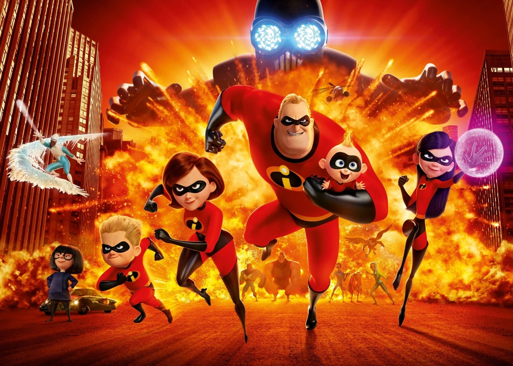

About Bob
True to his incredible strengths, all Bob wants to do is save the world - even if he has to do it undercover. It takes almost losing everything, however, for him to see that the real source of his power is his extraordinary family.
Bob at work
How to describe Bob?
- He's got big body
- He's got big heart
- He's got small head
What is a strong man without a family?
If you want to deeperknowledge of the Parr family, click the link below!